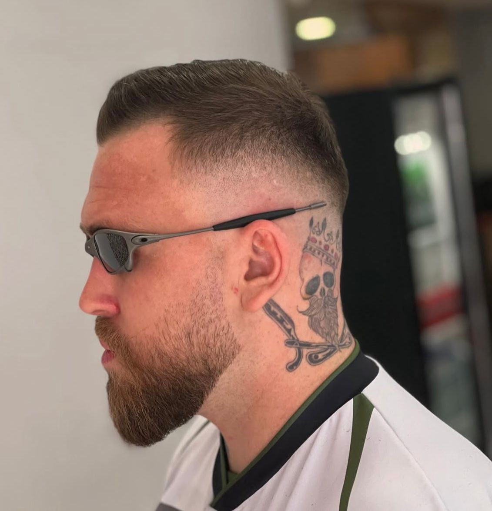
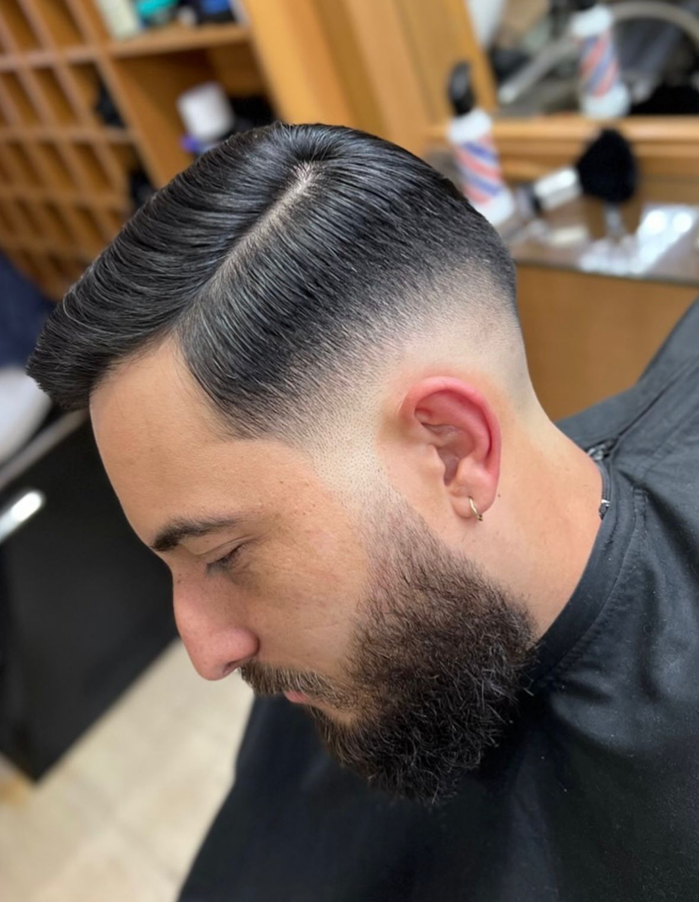
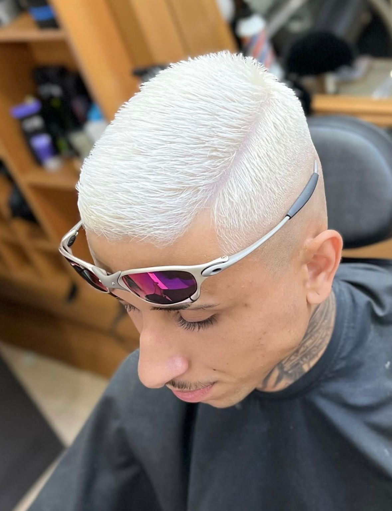

Nossa Galeria de Estilo
Confira alguns de nossos trabalhos e o ambiente da barbearia.




Siga-nos no Instagram para ver mais inspirações!
Na Kaio Barber você encontra atendimento profissional de alto nível, ambiente moderno e aquele corte que eleva seu visual e sua confiança. Venha experimentar a diferença!
Agendar agora pelo WhatsAppUtilizamos apenas produtos de alta qualidade para garantir os melhores resultados.
Olá! Sou Kaio, e a Kaio Barber nasceu da paixão por transformar visuais e elevar a autoestima. Com anos de experiência e um olhar atento às últimas tendências, meu objetivo é oferecer não apenas um corte de cabelo ou barba, mas uma experiência completa de cuidado e estilo. Venha fazer parte da nossa história!
Confira alguns de nossos trabalhos e o ambiente da barbearia.
Siga-nos no Instagram para ver mais inspirações!
"Corte impecável e atendimento top! A Kaio Barber realmente entende o que o cliente busca. Não troco mais." — Lucas Silva, cliente fiel
"Ambiente limpo, música boa e o Kaio manda muito bem! Minha melhor experiência em barbearias até hoje." — Matheus Santos, primeira vez
"Qualidade e profissionalismo em cada detalhe. O design de sobrancelha ficou perfeito!" — Fernando Lima, cliente satisfeito
Estamos localizados em:
R. Canal da Mancha, 196 - Jardim Regina Alice, Barueri - SP
CEP:06412-130
Horário de Funcionamento:
Agende seu horário com a Kaio Barber e experimente a diferença de um corte e barba impecáveis.
Chamar no WhatsApp e Agendar